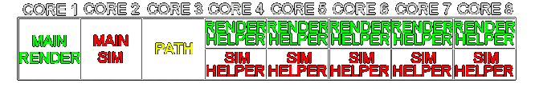

Spring MT

|
Warning! This page is outdated! The information displayed may no longer be valid, or has not been updated in a long time. Please refer to a different page for current information. |
Spring MT
The Spring MT 94.11 release is compatible with Spring 94.1
What is Spring MT?
Spring MT uses multithreaded asynchronous simulation (MT ASIM) to a much higher degree than the other Spring releases. It also uses asynchronous pathfinding (APATH). This typically translates into significantly higher performance, depending on your hardware.
What hardware do I need?
You need three physical cores to get any real benefit. A quad core or better is recommended. 
{kind=link}
How much faster is it?
Typically more than 100% faster with a quad core. Benchmarked using Core I7 2600K, BA7.72, DeltaSiegeDry, Default pathfinder, 4x "give all".
How can it be faster?
The simulation will run on several CPU cores, and the pathfinder may also run on a separate core.
How does Spring / Spring MT play together?
Spring MT includes Spring, and uses automatic engine type detection to make it sync-compatible.
On which servers can I play Spring MT?
Look for servers that have "Spring MT" or "MT" in the description. These servers will send you a chat message with instructions.
What is the downside?
The simulation may work slightly differently, possibly producing some negative effects. There is an increased risk of threading bugs that may cause a desync. The Default pathfinder is recommended because the QTPFS pathfinder tends to kill the performance of Spring MT.
Should I use MT even if I don't want to play on MT servers?
You can give it a try, the included Spring 94.11 (non-MT) version also has automatic CPU affinity setup that may give you some more performance.
How do I install it?
Note: After installation, join lobby chat room SpringMT9411 for streamlined access to MT autohosts.
Windows complete
Executables only
Unzip both executables in the install folder of the official release.
- Windows 94.11 MT, 94.11.
- Linux32 94.11 MT, 94.11. Requires a portable installation
- Linux64 94.11 MT, 94.11. Requires a portable installation
- OSX64 94.11 MT, 94.11. Requires a portable installation
Source code
How do I install it on my autohost?
Dedicated server
In spads.conf set masterChannel:SpringMT9411
In spads.pl, search for "sub cbJoinBattleRequest" and insert these lines of code immediately after the second line (the one that starts with "my"):
if (!exists $lobby->{channels}->{$masterChannel} ||
!exists $lobby->{channels}->{$masterChannel}->{$user}) {
my $mtmsg = "Please note this server REQUIRES Spring MT 94.11. ".
"Installation instructions: http://springrts.com/wiki/Spring_MT";
sayPrivate($user,$mtmsg);
}
Consider disabling spads auto update to avoid the changes being overwritten.